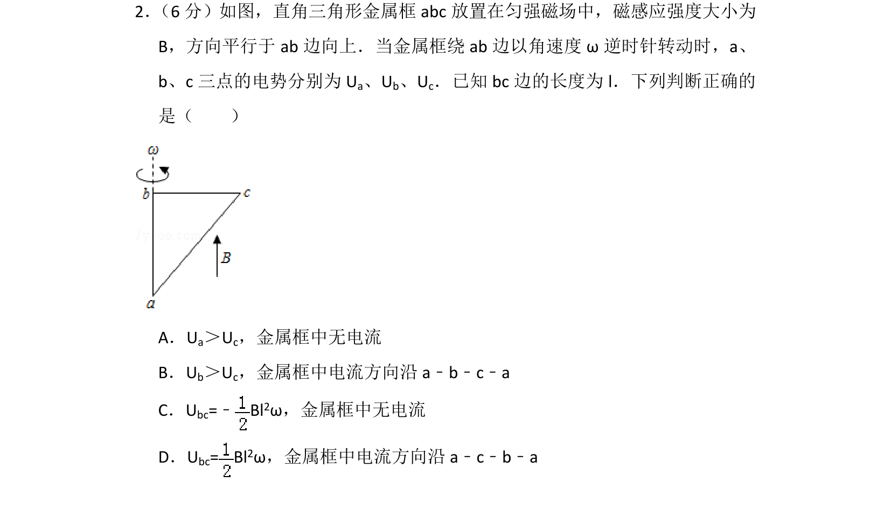
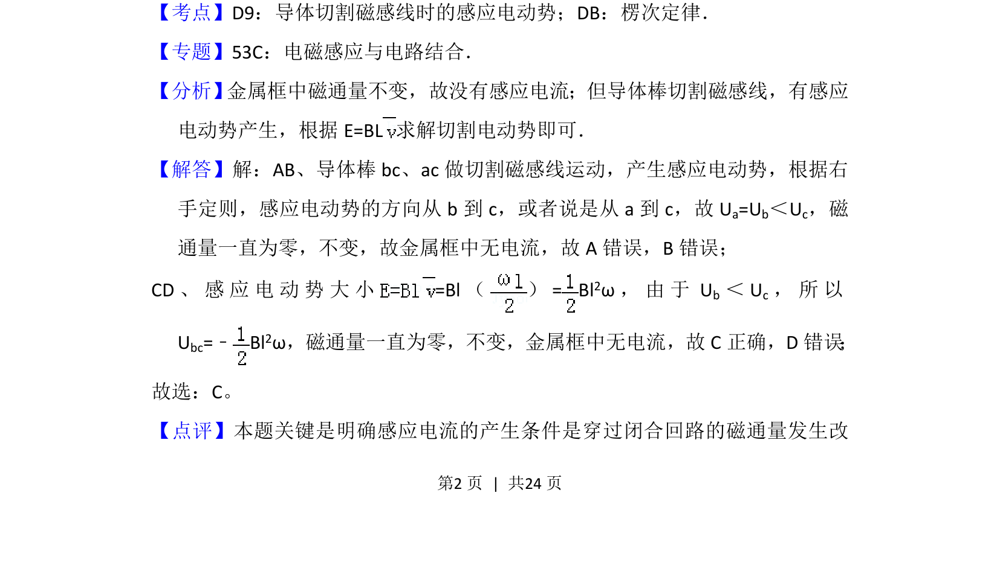
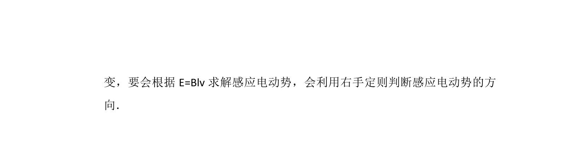

考点：导体切割磁感线时的感应电动势 楞次定律 右手定则 磁通量不变
导体切割磁感线时的感应电动势
楞次定律
右手定则
磁通量不变

金属框在匀强磁场中转动，考查切割磁感线产生感应电动势及感应电流有无的判断。


📄 原 PDF 第 2 页：素材/真题/吉林/2008-2024·（吉林）物理高考真题/2015年高考物理试卷（新课标Ⅱ）（解析卷）.pdf
素材/真题/吉林/2008-2024·（吉林）物理高考真题/2015年高考物理试卷（新课标Ⅱ）（解析卷）.pdf